artworks


닿지 않을 너에게, 아니 나에게
오래 전, 너와 나는 무언가를
좇으며 살았지.
눈을 감으면
언제든 길고긴 수평선
속으로 빠져들 수 있을 거라 믿었어.
오래 전, 너와 나는 물결의
그림자만을 좇으며 살았지.
눈을 감으면 언제든
부드러운 어둠 속으로
빠져들 수 있을 거라 믿었어.
하지만 발밑의 흙은 생각보다 깊었고,
그 속에서 나는 뿌리를 내려고 있었다는
걸 뒤늦게 알게 되었어.
물을 향한 갈증이
나를 묶어둔 게 아니라,
오히려 잡아주고 있었다는 사실처럼.
이제 나는 파도를 향해 몸을 던지기보다,
내 안에 흐르는 물기를 더듬으며 살아가려 해.
잎맥 속에 고여 있는 작은 빛처럼,
나 또한 이 땅 위에서 숨을 쉬고, 언어를 배우며,
옷감 사이로 스며드는 바람을 느낀다.
그리움은 여전히 사라지지 않지만,
그것이 나를 다시 길 위에 세우기에.
언젠가 네가 바라보던 바다가,
우리가 걸어온 발자국 끝에서
조용히 열리기를 바라면서.
届かない君へ、いや私へ。
昔、君と私はなにかを
追いかけながら生きてきた。
目を閉じれば
いつでも長い水平線の彼方へ
溶け込めると信じていた。
昔、君と私は波の影だけを
追いながら生きてきた。
目を閉じればいつでも
柔らかな闇の中へ
沈み込めると信じていた。
しかし、足元の土は
思っていたよりも深く、
その中で私は根を
下ろそうとしていたのだと、
後になって知った。
水への渇きが私を
縛っていたのではなく、
むしろ引き留めてくれていたのだ
という事実のように。
これから私は波に向かって
身を投げるよりも、
私の中に漂う水の気配を
手探りしながら生きていこうと思う。
葉脈の中に宿る小さな光のように、
私もこの地の上で息をし、言葉を学び、
布の隙間を吹き抜ける風を感じる。
懐かしさは今も消えない。
けれど、それが私を再び道の上に
立たせてくれるから。
いつか君が眺めていた海が、
私たちが歩んできた足跡の先で、
静かに開かれますように。
〈닿지 않을 나에게〉, 2025, 단채널 비디오, 컬러, 사운드, 1분 24초
《届かない私へ》, 2025年, シングルチャンネル・ビデオ, カラー, サウンド, 1分24秒
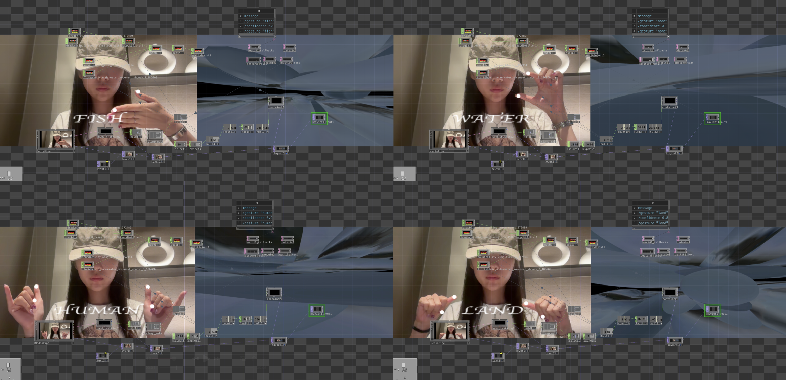
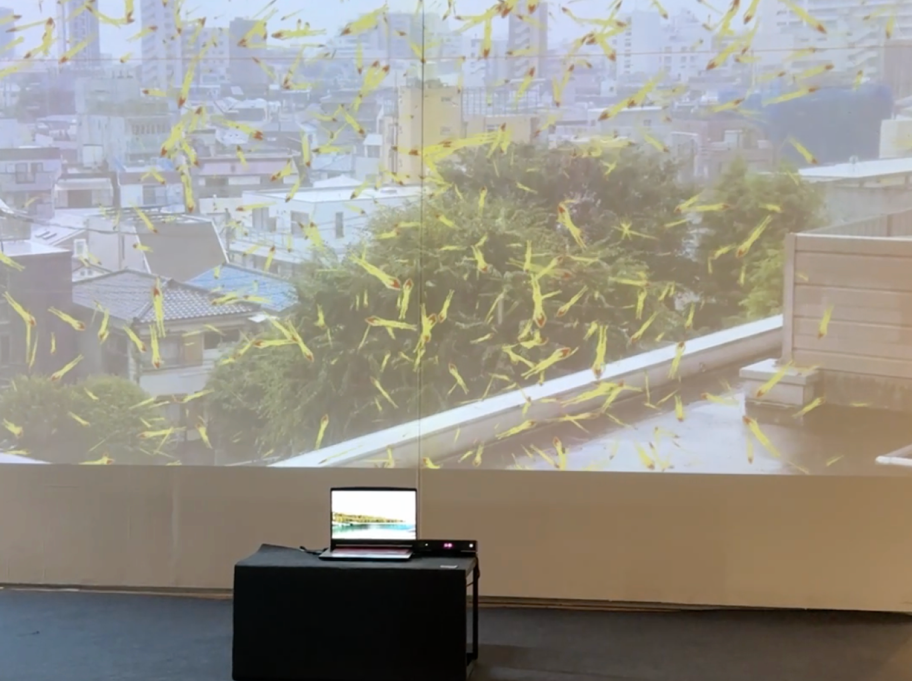
1
2
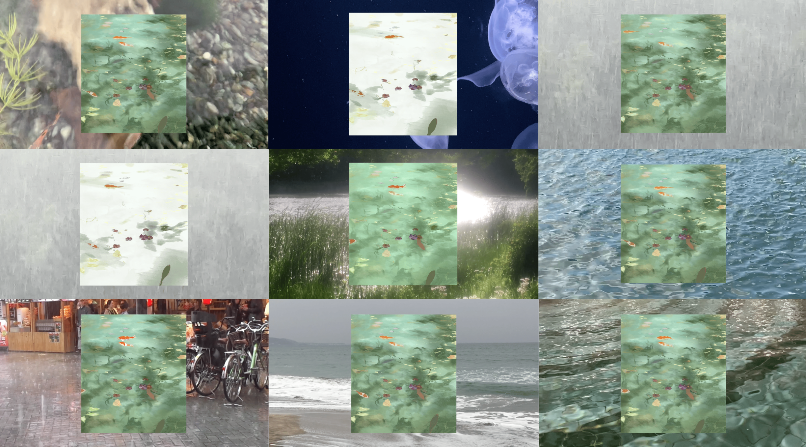
3
2
〈가챠 웹〉, 2025
웹 기반 인터랙티브 프로젝트, 바이브 코딩, 얼굴 인식 및 AI 기반 감정 분석 시스템
사용자의 얼굴을 인식하고 이를 가챠 캡슐 형태의 이미지로 변환하는 과정을 통해, 익숙한 자신의 모습을 새로운 시각으로 바라보는 경험을 제안한다. 얼굴의 특징을 반영해 생성된 이미지는 각기 다른 형태와 개성을 지니며, 사용자는 자신의 정체성이 디지털 환경 속에서 어떻게 재해석될 수 있는지를 마주하게 된다.
《ガチャ・ウェブ》, 2025
Webインタラクティブプロジェクト、Vibe Coding、顔認識およびAI感情分析システム
ユーザーの顔を認識し、それをガチャカプセルのイメージへと変換することで、見慣れた自分自身を新たな視点から捉える体験を提案する。顔の特徴をもとに生成されたイメージはそれぞれ異なる個性を持ち、利用者はデジタル空間の中で自身のアイデンティティがどのように再解釈されるのかを体験することができる。
1
〈가장 멍청한 회귀〉, 2025
단채널 비디오, 모션 센서 기반 인터랙티브 영상 설치, 30초
관람객의 움직임에 반응하여 변화하는 인터랙티브 영상 설치 작품이다. 작품은 물속에서의 자유롭고 평온한 기억으로 돌아가고자 하는 인간의 회귀 욕망을 다룬다. 관람자의 개입에 따라 영상의 흐름이 변화하며 기억과 현실 사이의 거리를 경험하도록 유도한다.
《最も愚かな回帰》, 2025
シングルチャンネル・ビデオ、モーションセンサーによるインタラクティブ映像インスタレーション、30秒
鑑賞者の動きに反応して変化するインタラクティブ映像インスタレーション作品である。本作は、水の中で感じた自由で穏やかな記憶へ戻ろうとする人間の回帰願望をテーマとしている。鑑賞者の介入によって映像が変化し、記憶と現実のあいだにある距離を体験させる。
3
〈물에서 자유롭게 춤을 추는〉, 2024
단채널 비디오, 디지털 드로잉 애니메이션, 3분
디지털 드로잉으로 제작된 물고기 애니메이션 뒤에는 물과 관련된 영상들이 중첩되어 재생된다. 애니메이션 속 물고기의 움직임은 제한적이며 언젠가는 끝을 맞이할 운명을 지닌다. 그러나 출렁이는 수면과 내리는 빗방울, 흐르는 물의 영상들은 마치 그 물고기가 조금이라도 더 오래 헤엄칠 수 있도록 생명력을 불어넣는 것처럼 보인다.
《水の中で自由に踊る》, 2024
シングルチャンネル・ビデオ、デジタルドローイング・アニメーション、3分
デジタルドローイングによって描かれた魚のアニメーションの背後には、水にまつわる映像が重ねて再生されている。アニメーションの中の魚の動きは限られており、やがて終わりを迎える運命にある。しかし、揺らぐ水面や降り続く雨、流れる水の映像は、その魚にわずかでも長く泳ぎ続けるための生命感を与えているかのように見える。
spatial design
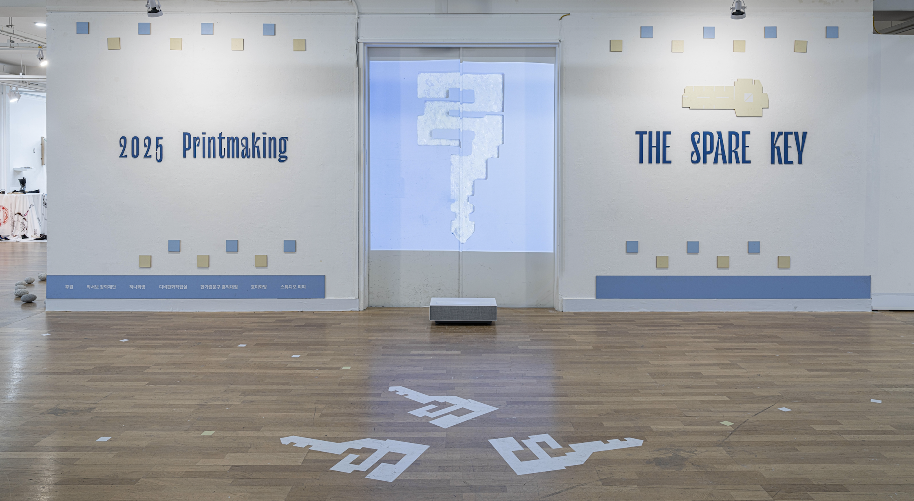
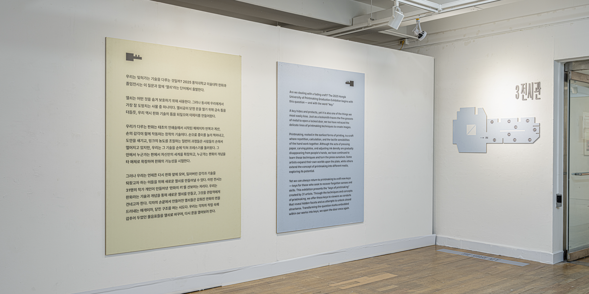
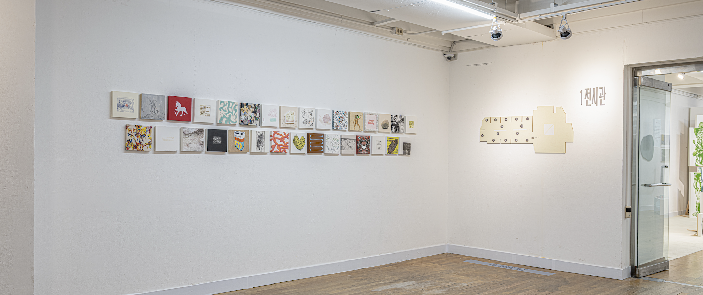
우리는 잊혀가는 기술을 다루는 것일까? 2025 홍익대학교 미술대학 판화과 졸업전시는 이 질문과 함께 '열쇠'라는 단어에서 출발한다.
열쇠는 어떤 것을 숨겨 보호하기 위해 사용한다. 그러나 동시에 우리에게서 가장 잘 도망치는 사물 중 하나이다. 열쇠공이 닫힌 문을 열기 위해 금속 틈을 더듬듯, 우리 역시 판화 기술의 틈을 되짚으며 이미지를 만들어왔다.
우리가 다루는 판화는 태초의 인쇄술에서 시작된 매체이자 반복과 계산, 손의 감각이 함께 작동하는 창작의 기술이다. 손으로 종이를 눌러 찍어내고, 도안을 새기고, 잉크의 농도를 조절하는 일련의 과정들은 사람들의 손에서 멀어지고 있지만, 우리는 그 기술을 손에 익혀 프레스기를 돌려왔다. 그 안에서 누군가는 판에서 자신만의 세계를 확장하고, 누군가는 판화의 개념을 타 매체로 확장하며 판화의 가능성을 시험한다.
그러나 우리는 언제든 다시 판화 앞에 모여, 잃어버린 감각과 기술을 되찾고자 하는 이들을 위해 새로운 열쇠를 만들어낼 수 있다. 이번 전시는 31명의 작가 개인이 만들어낸 '판화의 키'를 선보이는 자리다. 우리는 판화라는 기술과 개념을 통해 새로운 열쇠를 만들고, 그것을 관람객에게 건네고자 한다. 각자의 손끝에서 만들어진 열쇠들은 감춰진 판화의 면을 드러내는 매개이자, 닫힌 구조를 여는 시도다. 우리는 각자의 작업 속에 감추어 두었던 물음표들을 열쇠로 바꾸어, 다시 문을 열어보려 한다.
私たちは、忘れられつつある技術を扱っているのだろうか。2025年弘益大学校美術大学版画科卒業展示は、この問いとともに、「鍵」という言葉から始まる。
鍵とは、本来何かを隠し、守るためのものである。しかし同時に、私たちのもとから最もよく姿を消してしまう存在の一つでもある。鍵師が閉ざされた扉を開くために金属のわずかな隙間を探るように、私たちもまた版画という技術の隙間をたどりながらイメージを生み出してきた。
私たちが扱う版画は、太古の印刷技術に起源を持つメディアであり、反復と計算、そして手の感覚がともに働く創作の技術である。紙に手で圧をかけて刷り上げ、版を彫り、インクの濃度を調整する――そうした一連の工程は次第に人々の手から遠ざかりつつある。それでも私たちは、その技術を身につけ、プレス機を回し続けてきた。その中である者は版の上に独自の世界を広げ、またある者は版画の概念を他のメディアへと拡張し、その可能性を探求している。
しかし私たちは、いつでも再び版画のもとに集うことができる。失われつつある感覚や技術を取り戻そうとする人々のために、新たな鍵を作り出すことができる。本展は、31名の作家それぞれが生み出した「版画の鍵」を紹介する場である。私たちは版画という技術と概念を通じて新たな鍵を作り出し、それを来場者へ手渡したいと考えている。それぞれの手から生み出された鍵は、隠されていた版画のさまざまな側面を明らかにする媒介であり、閉ざされた構造を開くための試みでもある。私たちはそれぞれの作品の中に秘めていた問いを鍵へと変え、もう一度、その扉を開こうとしている。
《더 스페어 키 (The spare key)》 졸업전시 공간 기획, 2026
메인 입구 및 참여 작가 공간 배치 레이아웃
卒業制作展『The spare key』空間構成・会場レイアウト, 2026
メインエントランスおよび出展作家のスペース配置
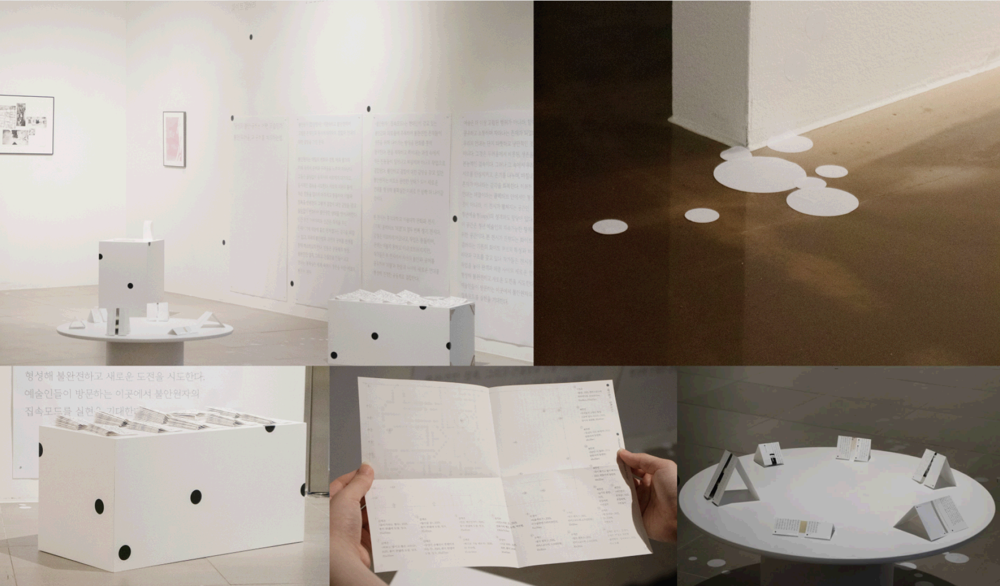
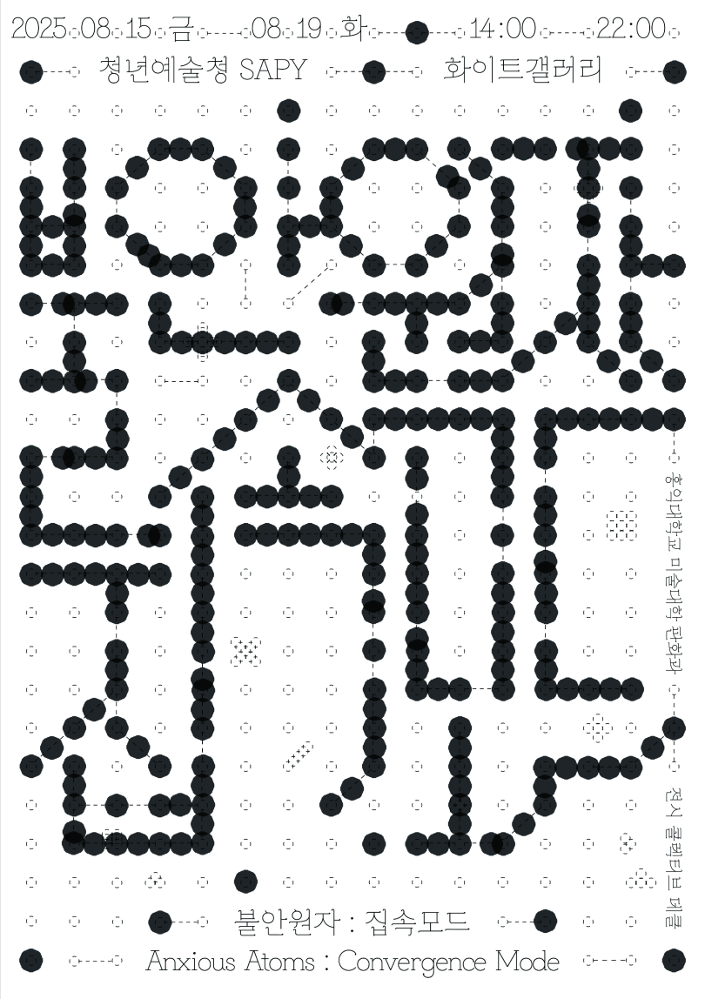
불안원자 [합성명사]
미완숙하고 불안전하며 고립된 존재임과 동시에 타자와의 결합과 연대에 대한 갈망을 가진 존재
불안원자는 매일의 변화와 경쟁, 예측 불가의 미래 속에서 공허와 두려움을 느끼며 자라난다. 그들은 끊임없이 움직이며 서로에게 다가가고, 임시적인 결속을 시도한다. 서로의 미완의 틈에 작은 진동을 일으켜 마주치고 충돌하며, 이탈과 접촉을 반복한다. 그렇게 결합에 대한 갈망을 갖고 끊임없이 변화하며 불안정한 상태를 벗어나려한다. 인간 또한 마찬가지다. 인간은 의식을 지닌 존재이기에 세상에 홀로 던져졌다는 감각을 피할 수 없고, 외부의 불안정과 내면의 공허를 관계를 통해 해소하고자 한다. 진동은 공동체의 형상, 불완전한 접촉, 그리고 간절함을 만들어내고 연대는 불확실한 세계 속에서 생존을 위한 서로의 체온이 된다.
<불안원자: 집속모드>는 현대인이 갖고 있는 불안감과 외로움에 주목하여 불완전한 존재들이 생존을 위해 나아가는 방식을 판화를 통해 탐구한다. 판을 제작하고 찍어내는 과정 속에서 작은 진동들이 일어나고 부딪치며 하나의 작업으로 결합된다. 불안하고 결합에 대한 갈망을 갖고 있던 불안원자는 비로소 완전한 상태가 되어 새로운 연대를 형성해 불확실한 미래로 한 발짝 더 나아갈 것이다.
본 전시는 홍익대학교 미술대학 판화과 전시(기획) 콜렉티브 '데클'의 열두 번째 정기 전시다. 감정은 미묘하게 어긋나고, 작업은 충돌하며, 관계는 머물지 못하고 이내 흐트러지지만, 작가들은 본 전시에서 자신의 불안과 공허를 공유하며 '데클'과 관람객 사이에 새로운 연대를 형성해 진정한 공동체로 결합한다.
예술은 더 이상 고립된 행위가 아니라, 함께 공유하고 소통하며 자라나는 존재가 되었다. 우리의 연대는 단지 따뜻하고 낭만적인 것만은 아니다. 그것은 두려움에서 비롯된, 생존을 위한 본능적인 결속이다. 그러나 그 속에서 우리는 서로를 안심시키고, 온기를 나누며, 마침내 혼자가 아니라는 감각을 회복한다.
이러한 연대는 데클이라는 콜렉티브 안에서만 형성되는 것이 아니라, 이 전시가 펼쳐지는 공간인 청년예술청(sapy)의 성격과도 맞닿아 있다. 이 공간은 청년 예술인의 지속가능한 창작활동을 위한 공간이다. 본 전시가 진행되는 화이트 갤러리는 기존의 화이트 큐브의 특성과 비대칭적인 바닥과 구조를 갖고 있다. 작가들은 전시장 곳곳에 작업을 놓아 관객과 데클 사이의 새로운 연대를 형성해 불완전하고 새로운 도전을 시도한다. 예술인들이 방문하는 이곳에서 불안원자의 집속모드를 실현을 기대한다.
不安原子
未成熟で不完全、そして孤立した存在であると同時に、他者との結合や連帯への渇望を抱いた存在。
「不安原子」は、日々の変化や競争、予測不可能な未来のなかで、空虚と恐怖を感じながら肥大化していく。それらは絶え間なく動き回り、互いに近づき、一時的な結束を試みる。互いの未完の隙間に小さな振動を起こして出会い、衝突し、離脱と接触を繰り返す。そのように結合への渇望を抱きながら絶え間なく変化し、不安定な状態から抜け出そうとする。人間もまた同様である。人間は意識を持つ存在であるからこそ、世界に一人投げ出されたという感覚を避けることはできず、外部の不安定さと内面の空虚を「関係性」を通じて解消しようとする。振動は共同体の形象、不完全な接触、そして切実さを生み出し、連帯は不確実な世界のなかで生き残るための、互いの体温となる。
「不安原子：集束モード」は、現代人が抱える不安感と孤独感に焦点を当て、不完全な存在が生きていくための方法を版画を通じて探求する。版を制作し、刷り上げる過程のなかで、小さな振動が生じてぶつかり合い、一つの作品へと結合していく。不安に満ち、結合への渇望を抱いていた不安原子は、ようやく完全な状態となり、新たな連帯を形成して不確実な未来へと一歩踏み出す。
本展は、弘益大学校美術大学版画科の展示（企画）コレクティブ「デクル（Decl）」の第12回定期展である。感情は微妙にすれ違い、作品は衝突し、関係は留まることなくたちまち乱れてしまうが、作家たちは本展において自らの不安と空虚を共有し、「デクル」と観客の間に新たな連帯を形成して、真の共同体へと結合する。
芸術はもはや孤立した行為ではなく、共に共有し、コミュニケーションを取りながら成長する存在となった。私たちの連帯は、単に温かくロマンチックなものだけではない。それは恐怖から始まった、生存のための本能的な結束である。しかしそのなかで、私たちは互いを安心させ、温もりを分かち合い、ついに「一人ではない」という感覚を回復するのである。
このような連帯は、デクルというコレクティブのなかだけで形成されるのではなく、この展示が繰り広げられる空間である「青年芸術庁（SAPY）」の性格とも響き合っている。この空間は、若手芸術家の持続可能な創作活動のための場所である。本展が開催されるホワイト・ギャラリーは、従来のホワイト・キューブの特性を持ちながらも、非対称な床や構造を備えている。作家たちは展示室のいたるところに作品を配置することで、観客とデクルの間の新たな連帯を形成し、不完全で新しい挑戦を試みる。芸術家たちが集うこの場所で、「不安原子の集束モード」が実現されることを期待する。
〈불안원자: 집속모드〉, 2024
청년예술청 SAPY 기획전
전시 컨셉 개발, 공간 기획, 참여 작가 공간 배치 설계, 구조물 설치
《不安原子：集束モード》, 2024
青年芸術庁 SAPY企画展
展示コンセプト企画、空間デザイン、参加作家の展示レイアウト設計、展示構造物設置
about & archive
프로필 사진
텍스트 — 추가 예정
music video art director
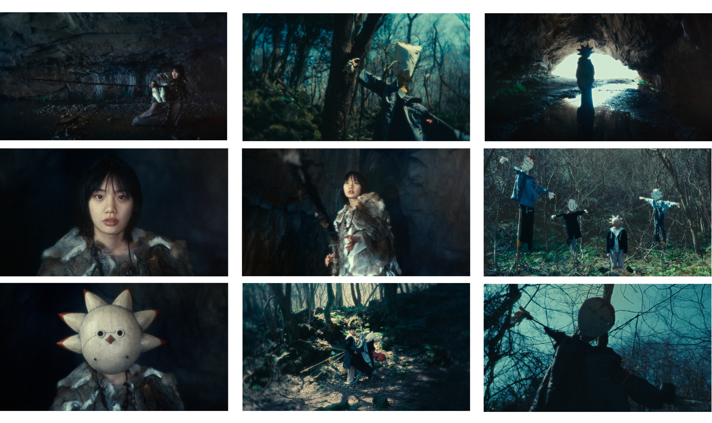
media party
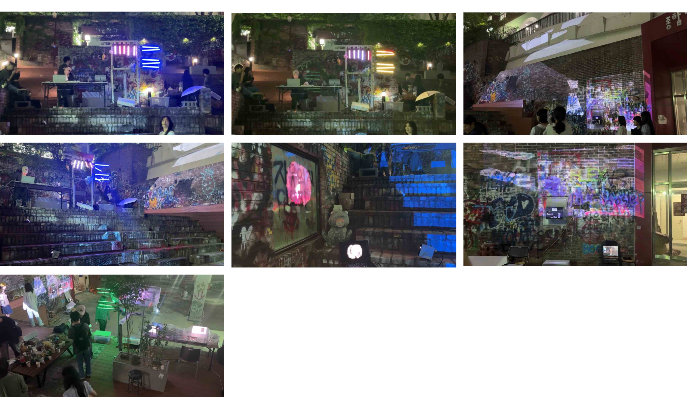
artist book

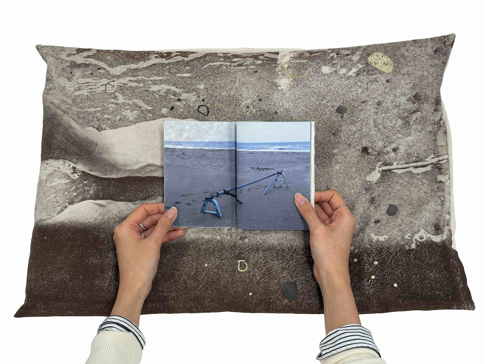
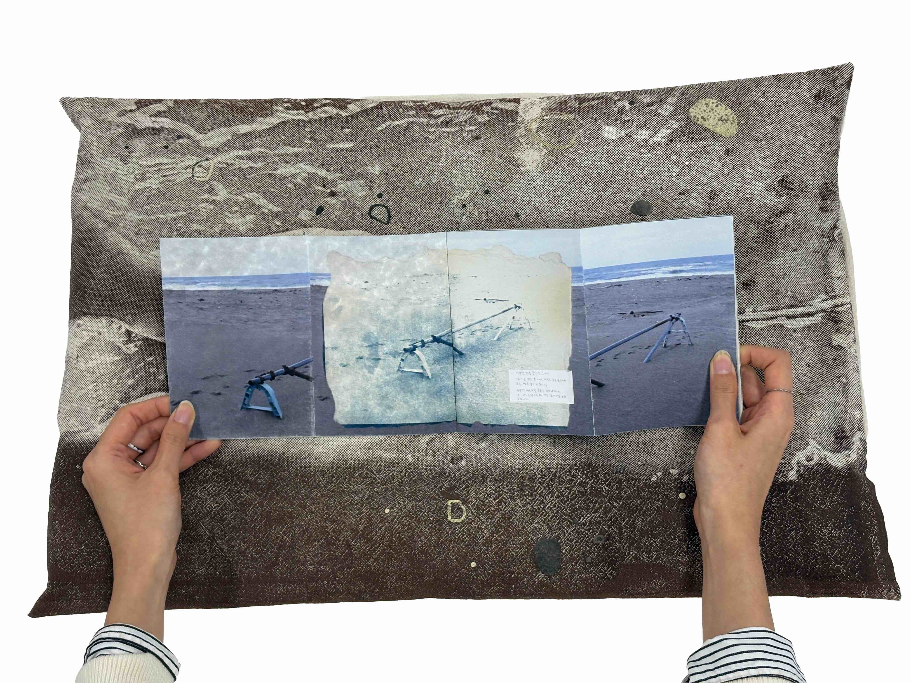
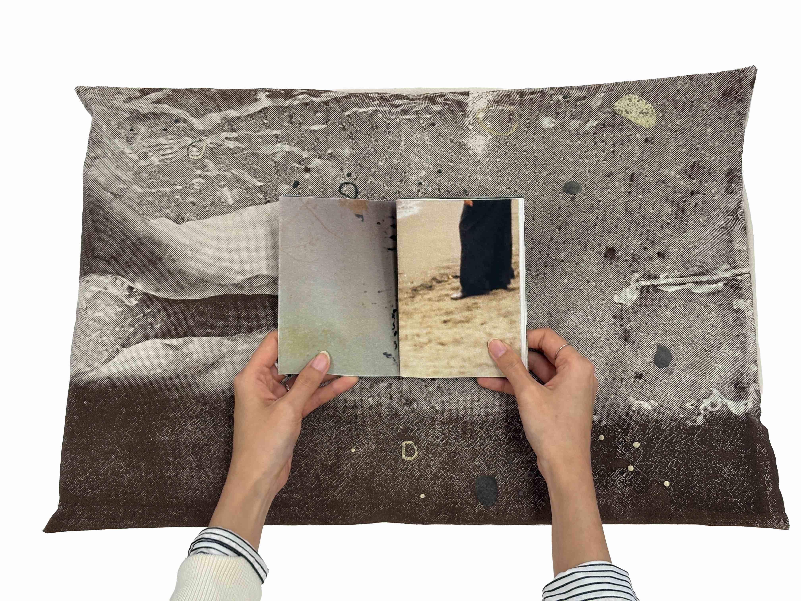
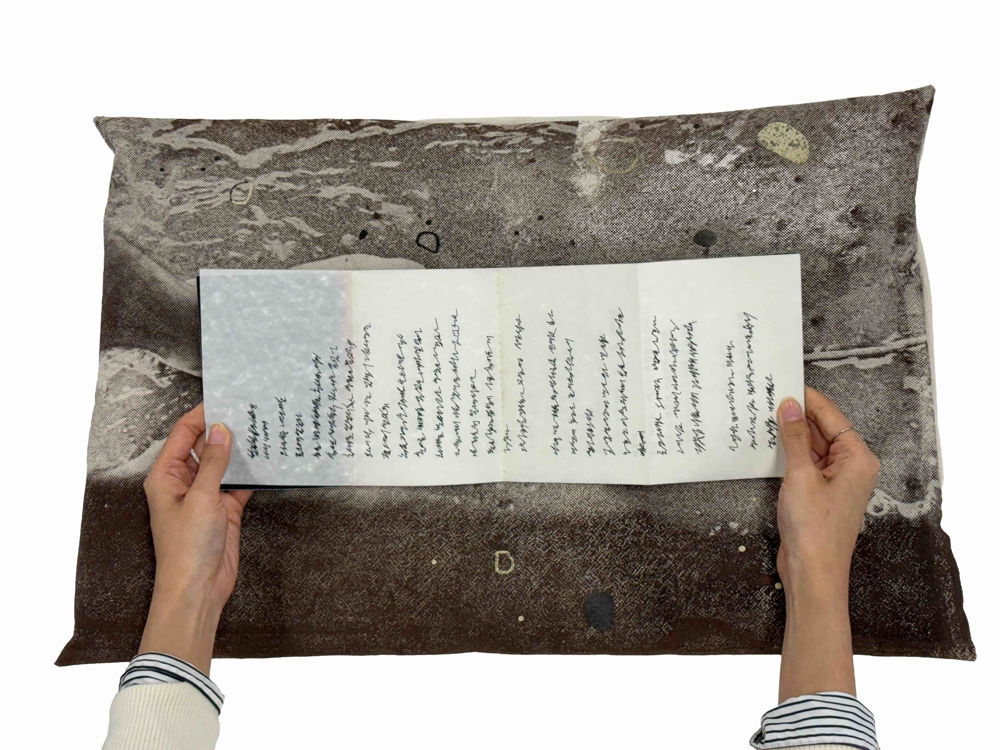
education
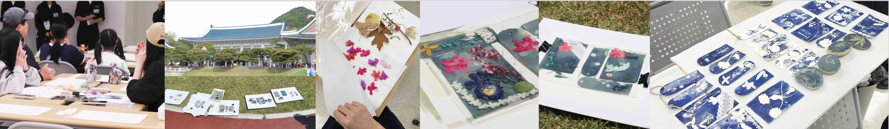
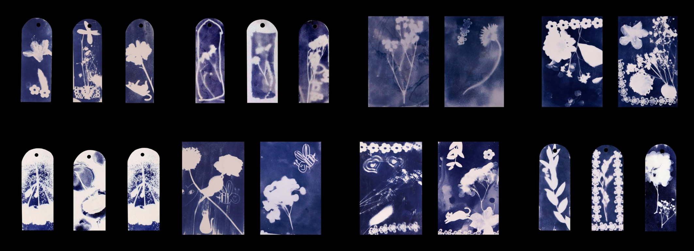
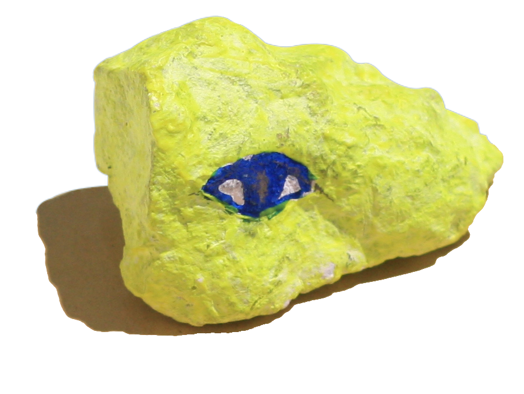
art for a cause
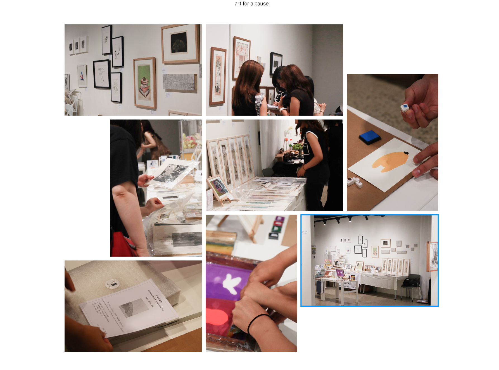